"A possibilidade e condição de alcance, percepção e entendimento para a utilização, em igualdade de oportunidades, com segurança e autonomia, do meio físico, do transporte, da informação e da comunicação, inclusive dos sistemas e tecnologias de informação e comunicação, bem como de outros serviços e instalações."
Para o desenvolvimento de sites e aplicações, esta definição se traduz em garantir com que o máximo de pessoas consiga utilizar aquilo que foi desenvolvido. Os tipos de deficiência são categorizados em 5 grupos e, inicialmente, existem cuidados básicos para cada grupo:
Deficiência auditiva: pessoas com perda total ou parcial da audição. É importante transcrever audios e gerar legendas para vídeos utilizados no site.
Deficiência cognitiva, de aprendizado e neurológica: pessoas que podem ter dificuldades com o entendimento de informações. É importante que o conteúdo da aplicação esteja claro, bem estruturado e com links previsíveis.
Deficiência física: pessoas com limitações no controle de músculos, com distúrbios articulares ou com membros faltantes. É importante que elementos clicáveis possuam uma área considerável para facilitar o clique e que o site ou aplicação suporte reconhecimento de voz em campos aplicáveis.
Deficiência de fala: pessoas com dificuldades de fala ou que não conseguem falar. É importante que o site ou aplicação não tenha funcionalidades ativadas somente por voz.
Deficiência visual: pessoas com perda parcial ou total da visão, ou com baixa acuidade visual. É importante se atentar aos contrastes de cor da página, garantir que textos e imagens possam ser aumentados em tamanho e que o site ou aplicação suporte leitores de tela.
Além dos cuidados básicos mencionados anteriormente, é possível, na própria escrita do código, utilizar técnicas e adicionar elementos que permitirão e/ou facilitarão o uso do site por pessoas com algum tipo de deficiência. Alguns destes elementos e técnicas são:
Texto alternativo em imagens: além de gerar um texto explicativo da imagem para situações em que há um problema de carregamento, o atributo alt da tag img é como o leitor de tela irá apresentar a imagem ao usuário, sendo indispensável para imagens com significado como imagens de produtos em um e-commerce.
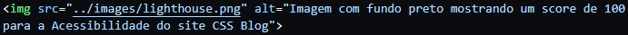
Como o atributo alt é inserido no código HTML.
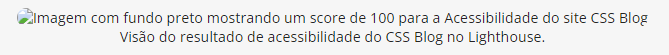
Como o atributo alt é exibido em uma falha de carregamento. Este texto é o que o leitor de tela irá reproduzir para o usuário.
Utilização de HTML semântico: O HTML semântico, além de dar mais sentido ao código, possui identificação semântica também na árvore de acessibilidade. No leitor de tela, a tag header possui a identificação de banner, a tag nav possui identificação de navigation, entre outras tags e seus identificadores. Isto vai facilitar o entendimento pelo usuário do que aquele bloco de links ou textos significa.
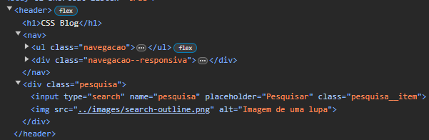
Header do CSS Blog utilizando HTML semântico.Como o header do CSS Blog é visto na árvore de acessibilidade.
Uso de labels para elementos de formulário: a tag label serve como um identificador para os elementos de formulário, facilitando o entendimento de para que serve aquele campo específico. Label e input são conectados por meio do atributo for de label tendo o mesmo valor que o atributo id do input.
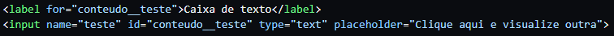
Criação de um input de texto com label.
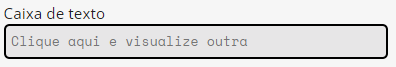
Resultado do código da imagem anterior: uma caixa de texto com a label "Caixa de texto".
Utilização de hierarquia de títulos: com a utilização das tags h1 à h6 é possível, para o leitor de tela, identificar qual o nível do título que está escrito. Desta forma, é possível navegar o site pelos títulos e subtítulos de modo a se encontrar o que se precisa ou quer ler sem a necessidade de passar pelo site por completo. Caso a hierarquia não fosse utilizada e todos os textos fossem escritos com a tag p, por exemplo, o leitor de tela não conseguiria diferenciar os textos, mesmo com estilização diferenciada no CSS. Isso faz com que usuários de leitor de tela tenham que passar pelo site por completo para buscar o que precisam, o que não é adequado.
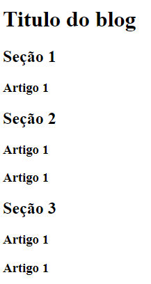
Esqueleto de blog utilizando as tags h1, h2 e h3.
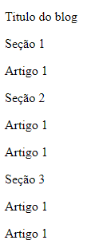
Esqueleto de blog utilizando a tag p.
Contraste de cores na página: a depender das cores utilizadas na aplicação, pessoas com distúrbios de visão ou baixa visão podem não conseguir distinguir textos e imagens. Várias ferramentas na internet como o Contrast Ratio do Siegemedia indicam a razão de contraste entre duas cores. Quanto menor o contraste, maior a possibilidade de algum usuário não conseguir realizar a leitura. É possível perceber nas imagens a seguir que a cor de fonte deste texto com a cor de fundo deste blog passam no teste, mas no caso de um "dark mode", com fundo mais escuro, seria necessário trocar a cor da fonte, pois o contraste não estaria adequado.
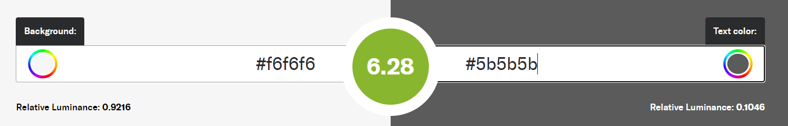
Teste de razão de contraste para as cores #f6f6f6 (cor de fundo do site) e #5b5b5b (cor do texto do site).
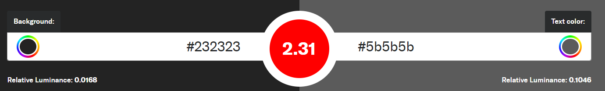
Teste de razão de contraste para as cores #232323 (cor de fundo escura) e #5b5b5b (cor do texto do site).
Utilização de aria-label e aria-labelledby em elementos não semânticos: alguns elementos HTML, como span e div, não possuem valor semântico, de modo que são inseridos com identificação genérica na árvore de acessibilidade. Isto torna dificultosa a leitura e a interpretação de o que aquele texto significa. O atributo aria-label auxilia nesse ponto com a inserção de um rótulo ao texto, dando um sentido àquilo que, normalmente, seria percebido como um texto solto. Caso tivéssemos uma div com um título h1, seria possível utilizar a aria-label na div, ou um aria-labelledby indicando a id do h1. Desta forma, a identificação deste bloco na árvore de acessibilidade seria o texto contido no título de nível 1.
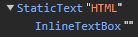
Como a tag "HTML" do artigo é vista na árvore de acessibilidade sem aria-label.
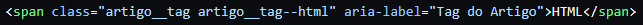
Inserção da aria-label no elemento.
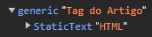
Como a tag "HTML" do artigo é vista na árvore de acessibilidade com aria-label.
Uso de unidades relativas no tamanho de texto: a unidade px, bastante utilizada em desenvolvimento, é uma unidade absoluta. Utilizando esta unidade, para que o usuário possa aumentar o tamanho de textos e imagens, ele deve utilizar o zoom do navegador. As configurações de aparência de navegadores possibilitam um "zoom automático" no tamanho de texto de sites, porém, se tratando de sites com dimensões em px, essa configuração não os afetará. A solução para isto é utilizar unidades relativas como em, rem e %, em que os sites poderão ser aumentados ou diminuídos tanto com zoom, quando com as configurações de aparência do navegador, dando maior autonomia de escolha aos usuários.
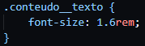
Utilização de unidades relativas no tamanho do texto do site.
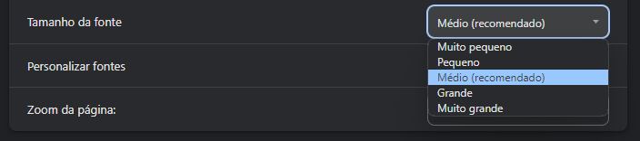
Opções de tamanho de fonte na aba de aparência das configurações do Google Chrome.
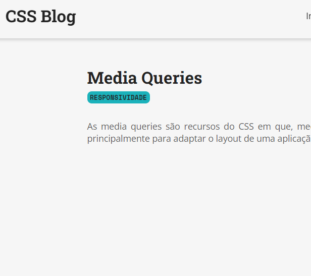
Artigo de Media Queries no CSS Blog com tamanho de fonte no "médio" nas configurações do Google Chrome.
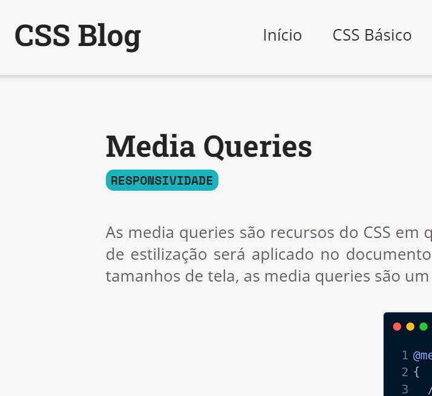
Artigo de Media Queries no CSS Blog com tamanho de fonte no "muito grande" nas configurações do Google Chrome.
O Chrome DevTools é uma ferramenta para desenvolvedores do Google Chrome que possui uma seção de diagnóstico do site em algumas frentes, uma delas sendo acessibilidade. A depender da nota (que vai de 0 a 100), o site pode estar bem adaptado para diferentes necessidades de usuários ou ter pontos de melhoria. É possível abrir o DevTools por meio da tecla F12 (Windows) ou clicando na página com o botão direito e selecionando a opção "Inspecionar". No menu de opções superior, é possível encontrar o "Lighthouse" e, para gerar o relatório, clicar em "Analyze page load".
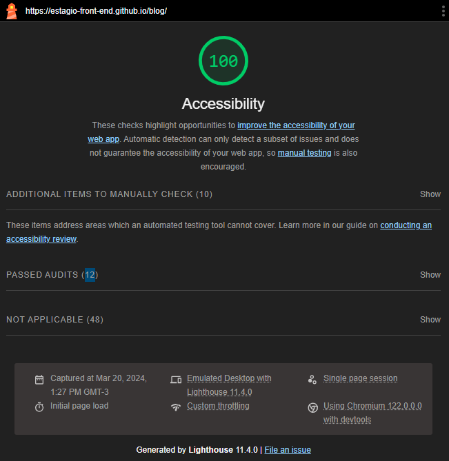
Visão do resultado de acessibilidade do CSS Blog no Lighthouse.
A imagem anterior mostra o padrão de visualização dos resultados no Lighthouse. O relatório traz tanto os pontos nos quais o site foi testado e aprovado, pontos de melhoria (se existirem) e, no caso da acessibilidade, pontos que não são possíveis de cobrir no teste do Lighthouse, mas que são importantes de serem testados manualmente. Alguns destes pontos são: o uso de labels em inputs, ARIA labels, HTML semântico, entre outros. Deste modo, um score de 100 não indica que o site está 100% adaptado, mas é um bom indicativo de que se está no caminho certo.
Portanto, é possível perceber que a acessibilidade no desenvolvimento é um tema amplo, mas de suma importância para que o desenvolvedor crie aplicações que possam ser utilizadas por todos.
Camila Matias
Desenvolvedora Front End
20 Mar
Gostou do que leu? Deixe um comentário
Seu endereço de e-mail não será publicado. Os campos obrigatórios estão marcados *